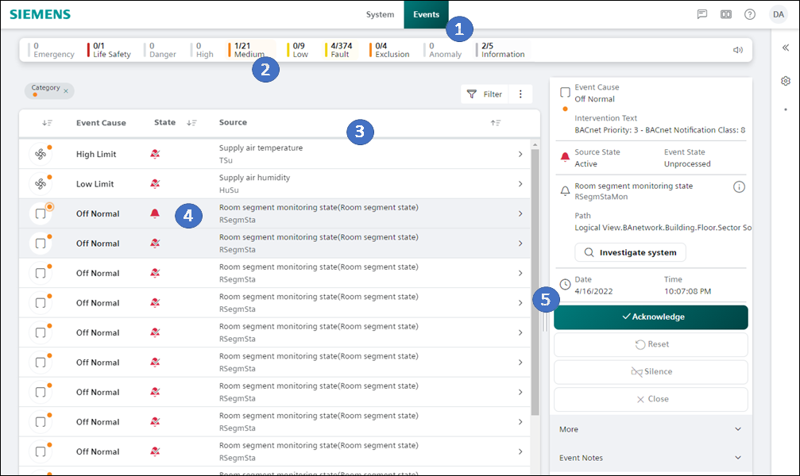

Acknowledge Common Event from the Alarm List
Scenario: A fault occurs in a room or a plant that is recognized by the system with the Common Event object and is displayed in the Summary Bar. All faults belonging to a room are displayed. This also applies to objects that are not in the system database through Application Modeling. All plant faults that are not triggered via an intrinsic alarm are displayed.
- Automation station PXC4/5/7 is installed and the application includes a Common Event object.
- Select the Events tab from the horizontal navigation bar.
- In the Summary bar, select an alarm category, for example Medium.

- Select Source.
- Select alarm in the Event Detail bar.
- The alarm is highlighted and displayed in the alarm details tab.
- Select Acknowledge.